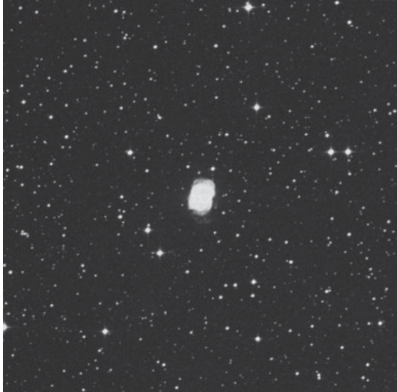

南环星云 · Southern Ring, Eight-Burst Nebula (NGC 3132)
The Southern Ring Nebula, also known as the Eight-Burst Nebula, presents itself as one of the most spectacular planetary nebulae visible to amateur astronomers in the Southern Hemisphere. Nestled within the constellation of Vela, this celestial jewel offers a striking visual experience that has captivated observers for nearly two centuries. Its distinctive figure-eight appearance, created by the interplay of expanding shells of ionized gas and the central white dwarf remnant, has earned it both of its popular names—the Southern Ring and the Eight-Burst.
南环星云，又称"八裂星云"，是南半球业余天文学家可见的最壮观的行星状星云之一。位于船帆座的这颗天体瑰宝呈现出令人叹为观止的视觉体验，近两个世纪以来一直吸引着众多观测者。它独特的"8"字形外观，由电离气体膨胀壳层与中心白矮星残余的相互作用所塑造，因而获得了"南环"与"八裂"两个美名。
历史发现 (Historical Discovery)
NGC 3132 in Vela is one of the most fantastic planetary nebulae accessible to small telescopes. Credit for the object's discovery usually goes to John Herschel, who observed the nebula several times with his 18¼-inch reflector. On one night he saw the nebula as "velvety, or like infinitely fine dust."
NGC 3132位于船帆座，是小型望远镜可见的最壮观行星状星云之一。该天体的发现通常归功于约翰·赫歇尔，他使用18.25英寸反射望远镜多次观测该星云。某夜，他将星云描述为"如天鹅绒般，或似无限细腻的尘埃"。
j o h n h e r s c h e l : "Planetary nebula, very large, very bright, elliptic; has in it a 9th magnitude star somewhat eccentric. Its light is exactly equable, i.e. not increasing towards the middle; yet I cannot help imagining it to be closely dotted. It is just like a star out of focus in certain states of the mirror and atmosphere. Three stars near, a = 9th magnitude; b = 9th magnitude; c = 14th magnitude. A very extraordinary object."
约翰·赫歇尔："行星状星云（PN），极为庞大明亮，呈椭圆形；其内部偏心地存在一颗9等星。其光度分布完全均匀，即不向中心递增；然而我仍不禁认为它密布着细微光点。其形态恰似反射镜与大气处于特定状态时失焦的恒星。附近可见三颗恒星：a = 9等；b = 9等；c = 14等。实属非凡天体。"
But James Dunlop had actually noticed it before Herschel, though he did not include it in his 1828 catalogue of nebulae and clusters. A footnote to the Brisbane Star Catalogue of 1826 recorded star [Brisbane] 3085 as "Dusky Yellow — a fine Planetary disk." John Herschel later recognized Dunlop's observation in his subsequent writings, acknowledging the Scottish astronomer's prior discovery.
但詹姆斯·邓洛普实际上在赫歇尔之前就已注意到它，尽管他未将其纳入1828年的星云与星团总表。1826年《布里斯班星表》的脚注中，将恒星[Brisbane] 3085记录为"暗黄色——一个精致的行星状圆面"。约翰·赫歇尔随后在其著作中认可了邓洛普的发现，承认了这位苏格兰天文学家的优先观测权。
j a m e s d u n l o p : "Dusky Yellow — a fine Planetary disk."
詹姆斯·邓洛普："暗黄色——一个精致的行星状圆面。"
The NGC description succinctly captures its essence: "Remarkable, a planetary nebula, very bright, very large, little extended star of magnitude 9, 4'' of time in diameter."
星云星团新总表的描述简洁地捕捉了其本质："显著，一个行星状星云（PN），非常明亮，非常大，略微延展的9等恒星，直径4弧秒。"

关键参数 (Key Parameters)
| 参数 / Parameter | 值 / Value |
|---|---|
| 类型 / Type | 行星状星云 / Planetary Nebula |
| 星座 / Constellation | 船帆座 / Vela |
| 赤经 / Right Ascension | 10h 07.0m |
| 赤纬 / Declination | -40° 26′ |
| 星等 / Magnitude | 9.4; 9.2 (O'Meara) |
| 视直径 / Angular Size | 84″ × 53″ |
| 距离 / Distance | ~2,000 光年 / ~2,000 light-years |
| 发现者 / Discoverer | 詹姆斯·邓洛普 / James Dunlop, 1826 |
观测体验 (Observing Experience)
Through an 8-inch telescope under dark skies, NGC 3132 reveals itself as a ghostly figure-eight suspended in the velvet darkness of space. The central 9th-magnitude star, clearly visible even in modest instruments, sits slightly off-center within the elliptical nebulosity. The surrounding envelope of gas appears as a delicate, almost translucent shell with a distinct oval shape, its edges fading gracefully into the background star field. The faint outer halo extends beyond the main structure, giving the entire nebula a three-dimensional, bubble-like quality that seems to float before your eye.
在黑暗的天空下，使用8英寸望远镜观测，NGC 3132呈现出悬浮在太空绒暗中的幽灵般的"8"字形。中心那颗9等恒星，即使在普通口径的望远镜中也能清晰可见，位于椭圆形星云稍微偏心的位置。周围的气体包层呈现出精致、近乎半透明的壳层，具有清晰的椭圆形状，边缘逐渐优雅地消融在背景星场中。微弱的外部光晕延伸到主体结构之外，赋予整个星云一种三维的、气泡般的质感，仿佛漂浮在眼前。
j o h n h e r s c h e l : "It is just like a star out of focus in certain states of the mirror and atmosphere."
约翰·赫歇尔："其形态恰似反射镜与大气处于特定状态时失焦的恒星。"
Herschel's comparison is remarkably apt—this nebula indeed resembles a defocused star, but one with an ethereal, otherworldly beauty that no terrestrial optical aberration could ever replicate. The subtle color gradation from the bright inner regions to the fainter outer edges creates a sense of depth that draws the observer deeper into its cosmic embrace.
赫歇尔的比喻极为贴切——这颗星云确实像一颗失焦的恒星，但它的空灵、非凡的美感，是任何地面光学像差都无法复制的。从明亮的内部区域到微弱的外缘，色彩渐变的微妙差异创造出一种深邃的层次感，吸引着观测者不断深入它宇宙般的怀抱。
The two stars embedded within the nebula—one being the hot white dwarf progenitor responsible for ionizing the surrounding gas, the other an unrelated line-of-sight companion—add an extra dimension to the observation. Their contrasting brightness and proximity create a delicate dance of light within the nebula's heart, a binary revelation that hints at the complex evolutionary history of this celestial wonder.
嵌入在星云内部的两颗恒星——一颗是加热白矮星祖先，负责电离周围气体；另一颗则是一颗无关的视线方向伴星——为观测增添了额外的层次。它们对比的亮度与靠近的距离，在星云核心创造出微妙的灯光之舞，一个双星揭示，暗示着这个宇宙奇迹复杂的演化历史。
What secrets does this binary heart conceal? The interplay between these two stars has shaped the intricate shell structure we see today, but the full story of their gravitational waltz and its consequences for the nebula's formation remains to be fully understood...
这颗双星核心隐藏着什么秘密？这两颗恒星之间的相互作用，塑造了我们今天所见的复杂壳层结构，但它们引力之舞的完整故事及其对星云形成的深远影响，仍有待进一步揭示...
🔒 受限于篇幅，本文仅展示部分样章。O'Meara 先生完整的观测手记、实测数据及未公开的独家配图，请参阅原著双语典藏版。
👉 立即在闲鱼获取《DEEP-SKY COMPANIONS》中英双语高清典藏版